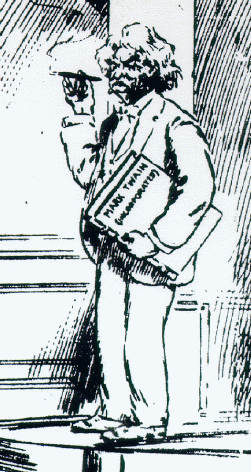

|
Samuel Clemens wanted a lot from the career of Mark Twain. When Elisha Bliss wrote in November, 1867, to propose that the American Publishing Company bring out a book based on MT's letters about the Quaker City trip, MT wrote back to ask "what amount of money I might possibly make out of it. The latter clause," he added, "has a degree of importance for me which is almost beyond my own comprehension." Unlike artists who at least affect indifference or disdain for the commercial aspects of their work, MT entered frankly, even exhuberantly into the business of literature. He was certainly the first writer to incorporate himself as an enterprise and trademark his name -- which is the event being satirized in the cartoon reproduced here from the New York World. Besides money, however, he sought fame, popularity, the attention of the world, all of which also depended on how widely his work would be bought and read. While his books are most often about worlds removed from the one he shared with his American audience -- about other countries, set in the past, or both -- in the way those books were created and promoted to be sold to that audience we see how thoroughly they engage his place and time. |
|
 New York World, 26 December 1908 |
|